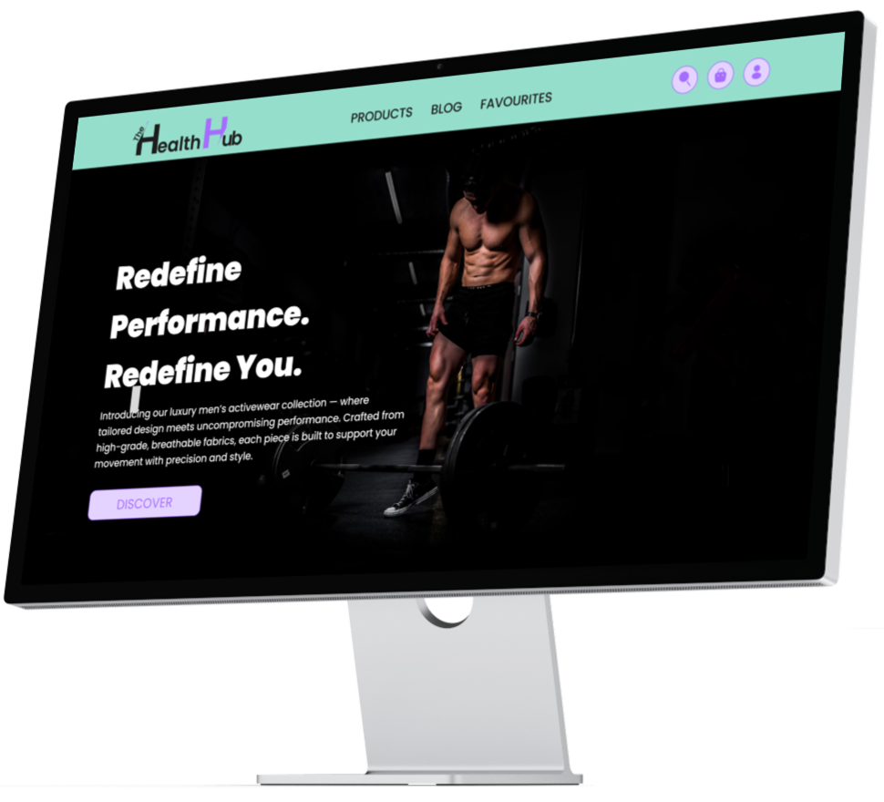

The Health Hub
web design
ux/ui research
Overview
The Health Hub is one of two group projects from the academy that I was part of. It’s a modern e-commerce platform built for individuals who are passionate about health, fitness, and balanced living. It offers a one-stop shop for everything you need to support an active lifestyle—from high-quality workout equipment and performance supplements, to functional fitness apparel and nutritious, clean foods.
 Click to view moreThe Process
- In a world overflowing with fitness trends, confusing nutrition advice, and endless online stores, The Health Hub was created to bring everything into one place—simple, smart, and designed with real people in mind.
- We’re a comprehensive wellness destination where fitness meets nourishment, motivation meets tools, and quality meets convenience.
- Designed with both beginners and seasoned fitness enthusiasts in mind, the website combines convenience, variety, and expert-backed content to help users make informed choices and stay motivated on their wellness journey.
- Whether you're setting up your home gym, refreshing your activewear wardrobe, fueling your body with the right nutrients, or leveling up your performance with smart supplementation, The Health Hub brings it all together in one seamless experience.
- Our mission: To empower people to move, fuel, and feel their best—by making wellness more accessible, less confusing, and more personalized than ever before.